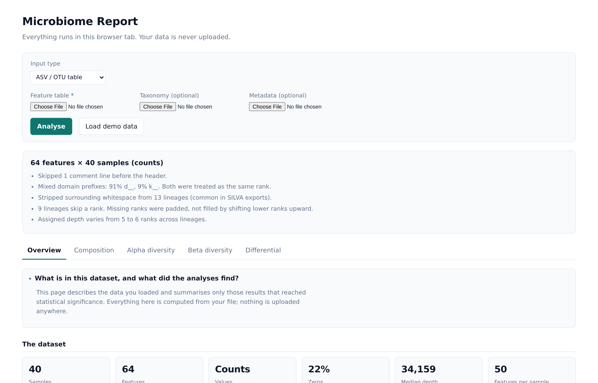
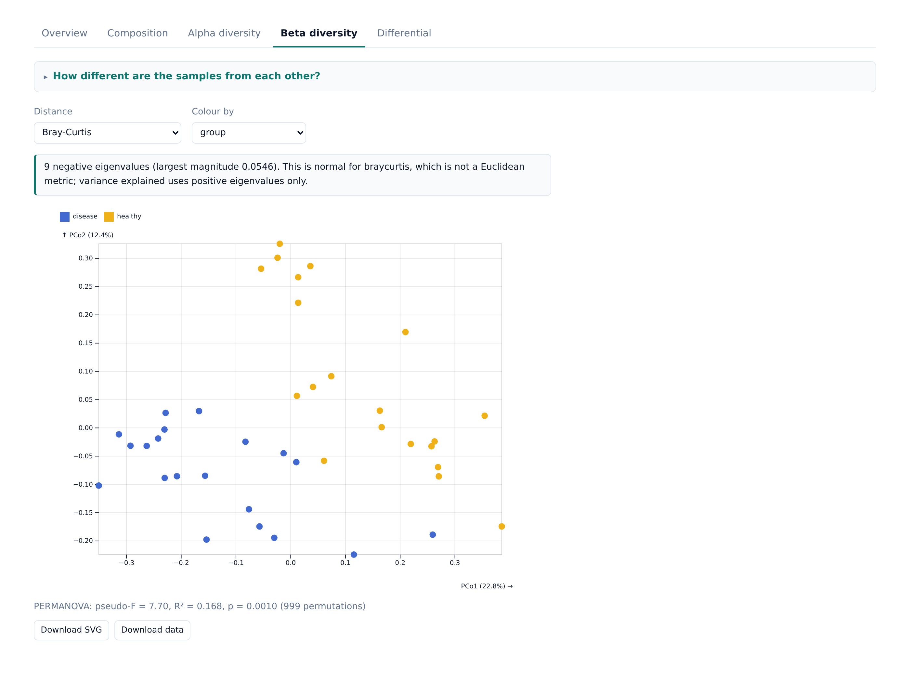
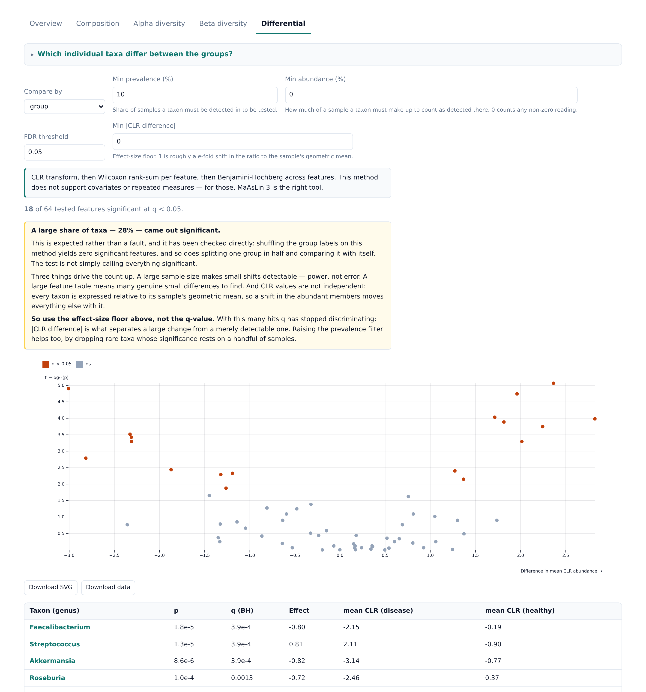

Composition, diversity and differential abundance from your feature table — computed in your own browser, never uploaded.
One HTML file, about 0.6 MB. Save it, double-click it, and it opens in the browser you already have. No installer, no terminal, no account, no sign-up.
MicrobiomeAnalyst, Nephele, Namco and MiCloud are servers you upload to. That is structural, not a feature gap, and it is why many hospital IRBs and consent terms rule them out.
This tool has no server at all. There is no upload code and no network call anywhere in it. Your table is read by the browser from your own disk, and every number is computed on your machine.
You do not have to take that on trust. Download the file, disconnect from the network, and use it exactly as normal — or watch your browser's network tab while you work. Both are quicker than reading a privacy policy.
“Try it here first” loads the page itself from GitHub, as any web page would. Even then, no data you load goes anywhere: the analysis runs in the tab. Downloading is still the better habit for real samples, because then nothing is involved but your own computer.
Stacked relative abundance per sample, grouped by any metadata column, with each group's span bracketed and labelled.
Shannon, Simpson, Chao1, observed richness and evenness, with the group comparison tested.
PCoA on Bray–Curtis, Jaccard or Aitchison distance, with PERMANOVA.
CLR plus Wilcoxon or Kruskal–Wallis per taxon, Benjamini–Hochberg across taxa, as a volcano plot and a sortable table.
Every figure exports as SVG, and the numbers behind it as TSV. Parsing reports what it found and what it had to do — mixed d__/k__ prefixes, stripped whitespace, samples dropped in the metadata join, uneven sequencing depth — before any analysis runs.
Only the feature table is required. Taxonomy and metadata each unlock more of the tool, and the interface says which analyses are unavailable without them rather than failing. Every file may be TSV, CSV or Excel .xlsx.
| File | What it is |
|---|---|
| Feature table | Features down the rows, samples across the columns. Counts or relative abundances both work, and a transposed table is detected. QIIME 2, DADA2 and MetaPhlAn output are all read directly. |
| Taxonomy | Optional. Lineage strings as QIIME 2 and SILVA produce them, or one column per rank as mothur, DADA2 and TaxAss produce them. A gap in a lineage is never filled by shifting a lower rank up. |
| Metadata | Optional. One row per sample. The sample-ID column is found by matching against the table, so it need not be first or carry a particular name. |
Click Load demo data inside the tool to try all of it before supplying anything of your own.


